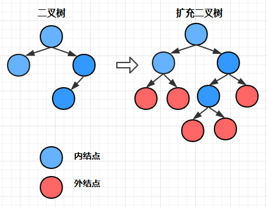
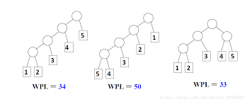

Redis持久化RDB方式，是指在指定的时间间隔内将内存中的数据集快照写入磁盘，实际操作过程是fork一个子进程，先将数据集写入临时文件，写入成功后再替换之前的文件，用二进制压缩存储。
一、基础
- 树是一种非线性的数据结构，是由n(n>=0)个结点组成的有限集合，如：Tree=(K,R),其中 K={01,02,03,04,05,06},R={<01,02>,<01,03>,<02,04>,<02,05>,<03,06>}
- 如果n=0，树为空树
- 如果n>0，树有一个特定的结点叫根结点
- 根结点只有直接后继，没有直接前驱
- 除根结点以外的其他结点划分为m(m>=0)个互不相交的有限集合，T0，T1，T2，…，Tm-1，每个结合是一棵树，称为根结点的子树
- 相关概念
- 阶：m阶树表示每个节点最多有m个子树
- 结点：每个元素称为结点(node)

- 分支：树的父结点到子结点的连线称为分支
- 带权树：结点有值的树
- 结点路径长度：从树的一个结点到另一个结点之间的分支构成两个结点之间的路径，路径上的分支数目称为路径长度
- 树的路径长度：从树根到每一个结点的路径长度之和
- 结点带权路径长度：树的结点到
根结点之间的分支上的权值的总和 - 树的带权路径长度：树中所有
叶子结点的带权路径长度之和【简称WPL，重要】
- 结点的深度：对任意结点x，根结点到x结点的路径长度为结点x的深度【自上而下】
- 结点的高度：对任意结点x，叶子结点到x结点的路径长度为结点x的高度【自下而上】
- 结点的层次：从根结点开始，根结点为第一层，根的子结点为第二层
- 结点的前驱：不同的遍历方式会有不同的前驱结点和后继结点
- 结点的后继：不同的遍历方式会有不同的前驱结点和后继结点
- 结点的度：结点的子树数目就是结点的度,叶子结点的度为0【理解】
- 树的深度：树的叶子结点所在的最大层次称为树的深度，也叫树的高度
- 树的高度：树的叶子结点所在的最大层次称为树的高度，也叫树的深度
- 父结点：若一个结点含有子结点，则这个结点称为其子结点的父结点
- 子结点：一个结点含有的子树的根结点称为该结点的子结点
- 兄弟结点：拥有共同父结点的结点互称为兄弟结点
- 叶子结点：度为零的结点就是叶子结点
- 祖先：对任意结点x，从根结点到结点x的所有结点都是x的祖先【结点x也是自己的祖先】
- 后代：对任意结点x，从结点x到叶子结点的所有结点都是x的后代【结点x也是自己的后代】
- 森林：m颗互不相交的树构成的集合就是森林
二、分类
二叉树
- 普通二叉树
- 满二叉树
- 完全二叉树
- 二叉查找树
- 平衡二叉树
- AVL树
- 红黑树
- 赫夫曼树，也称最优二叉树
- 普通二叉树
多路搜索树
- B-树
- B+树
- B*树
Trie树，也称字典树
三、扩展
深度优先遍历：也叫深度优先搜索，对每一个可能的分支路径深入到不能再深入为止，而且每个结点只能访问一次。
- 要特别注意的是，二叉树的深度优先遍历比较特殊，可以细分为先序遍历、中序遍历、后序遍历，具体如下：
- 先序遍历：对任一子树，先访问根，然后遍历其左子树，最后遍历其右子树。
- 中序遍历：对任一子树，先遍历其左子树，然后访问根，最后遍历其右子树。
- 后序遍历：对任一子树，先遍历其左子树，然后遍历其右子树，最后访问根。
- 要特别注意的是，二叉树的深度优先遍历比较特殊，可以细分为先序遍历、中序遍历、后序遍历，具体如下：
广度优先遍历：又叫层次遍历，或广度优先搜索，从上往下对每一层依次访问，在每一层中，从左往右（也可以从右往左）访问结点，访问完一层就进入下一层，直到没有结点可以访问为止。